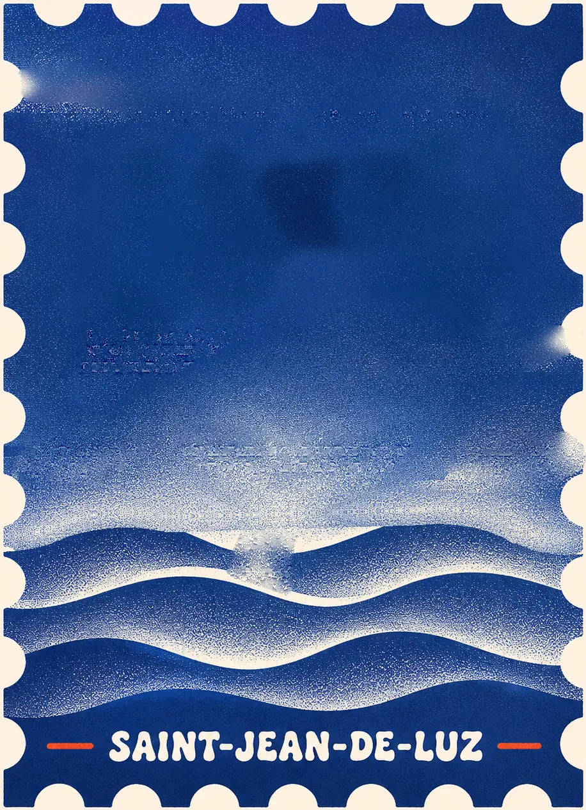
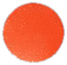
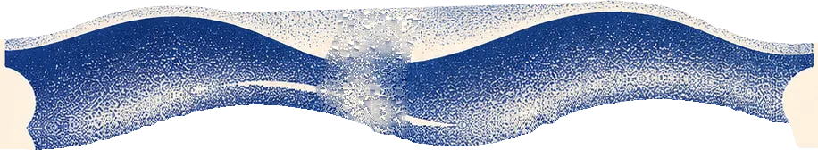
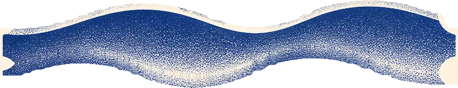
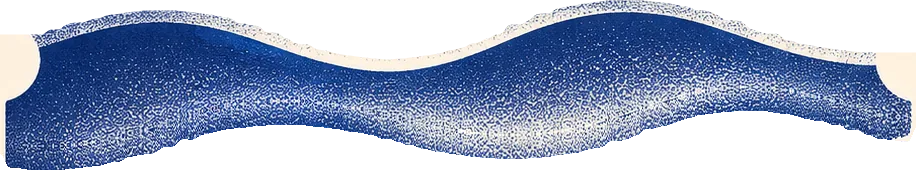

Pomme Dauphine
Saint‑Jean‑de‑Luz
Baie de Saint‑Jean‑de‑Luz
43°23′ N — 1°40′ O
Bientôt







Baie de Saint‑Jean‑de‑Luz
43°23′ N — 1°40′ O
Bientôt





Le dauphin de Saint-Jean-de-Luz est en fait une dauphine : une jeune femelle grand dauphin (Tursiops truncatus) qui vit dans la baie de Saint-Jean-de-Luz et Ciboure depuis l'automne 2025. On l'a surnommée Pomme. Âgée de 5 à 8 ans, elle mesure environ 2 mètres et pèse près de 200 kilos. Elle vit seule, ce qui est rare pour cette espèce, et passe souvent près de la Grande Plage.
Mis à jour le
En novembre, un abcès a été repéré sur son flanc droit, sous l'aileron. D'après les observations du 16 novembre, il s'est ouvert, et son comportement ne montre aucun signe d'affaiblissement. Elle est observée chaque jour par les agents de la ville et la correspondante du Réseau national échouages, coordonné par l'observatoire Pelagis.
Le grand dauphin est une espèce protégée. L'arrêté ministériel du 1er juillet 2011 interdit de s'en approcher à moins de 100 mètres, de nager avec elle, de la poursuivre, de l'encercler, de la toucher ou de la nourrir. L'amende peut atteindre 750 € pour un particulier et 3 500 € pour une entreprise. Le mieux est de la regarder depuis le rivage.
Oui. Depuis l'automne 2025, une jeune femelle grand dauphin surnommée Pomme vit dans la baie de Saint-Jean-de-Luz et Ciboure.
C'est une jeune femelle de 5 à 8 ans, pas encore adulte, d'où son surnom de dauphine de Saint-Jean-de-Luz.
Non. Le grand dauphin est une espèce protégée : il est interdit de nager avec lui, de le toucher ou de s'en approcher à moins de 100 mètres. L'amende peut atteindre 750 € pour un particulier.
En novembre 2026, un abcès est apparu sur son flanc droit. Il s'est ouvert le 16 novembre, et son comportement ne montre pas de signe d'affaiblissement. Elle est surveillée chaque jour.
La mairie de Saint-Jean-de-Luz, qui assure son suivi avec l'observatoire Pelagis : 05 59 51 61 71.
Une petite marque de vêtements et d'affiches née à Saint-Jean-de-Luz, autour de la dauphine de la baie. On la dessine, on ne l'approche pas : Pomme Dauphine ne propose aucune sortie en mer pour aller la voir. Contact : contact@pommedauphine.fr.
Sources : mairie de Saint-Jean-de-Luz, communiqué de l'observatoire Pelagis, 17 novembre 2026 ; mairie de Saint-Jean-de-Luz, 4 avril 2026.